Project information
- Category: Game
- Project date: April 18th, 2022
- Github: Runok
- Play:
Runok
A golem loses its powers and its conscience gets trapped inisde a beetle. Runok is an adventure game with platforms and puzzles, that will surprise you with its diverse challenges and mechanics. You shall overcome the obstacles and recover the golem's powers, to finally reach the pyramid and solve the mysteries about the golem's creation and the destruction of its home village.
This project was made by Symplectic Games: @SymplecticGames

Team members:
- Daniel Darias (Art, Music, Design)
- Ana Belén Fajardo (UI, Sound, Programming, Design)
- Gonzalo Gómez (Programming, Design)
- Mario Márquez (Programming, Design)
- Diego Sagredo (Programming, Design)
My part in this project was:
- Design
- Design the general game concept in collaboration with the rest of the team
- Design the overall levels layout, in collaboration with the rest of the team
- Design the Beetle puzzles in the first level
- Design the pyramid level layout and the balance puzzle in it
- Design the first phase of the final boss
- Programming
- Implement the movement behaviour for both the Golem and the Beetle
- Implement the swap mechanic between Golem and Beetle
- Implement the dynamic change of material and light modes for the Golem and Beetle, respectively
- Implement the mechanics for the three Golem materials
- Implement the light impulse mechanic for the Beetle
- Implement interactive elements, like pressure plate, Beetle portals, cracked platform, elevators, rotating central platform, etc
- Implement the balance puzzle for the pyramid level
- Implement the first phase of the final boss
- Implement some of the animators state machines
- Graphics:
- Created the geometry shader for the grass blades in level 3
- Created the fresnel shader for the final boss and shadow enemies look